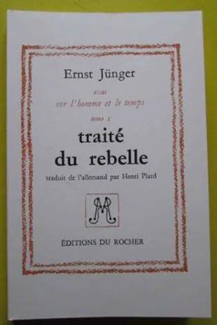
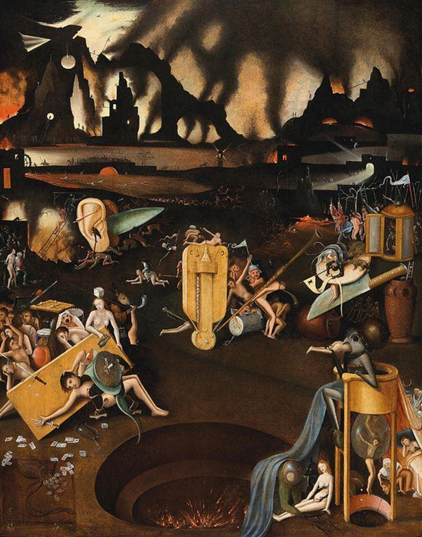
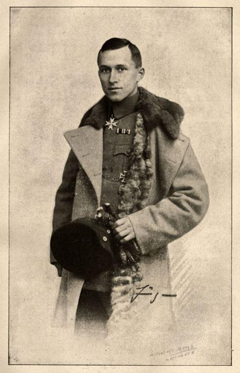

Le système occidental use de la peur pour se maintenir. Virus, terrorisme, chiites, climat nationalisme, fascisme, Chine, sexisme, Poutine, ce qu’on voudra, tout justifie l’agenda.
Nous autres antisystèmes sommes aussi soumis à un feu croisé d’affolements divers : troisième GM, faillite du système, acheter de l’or, fin des religions, culture Illuminati, disparition des libertés, de l’eau, de l’air, du reste… On en deviendrait drôle ! Cela n’empêche pas de continuer de cliquer et de laisser Assange à ses bourreaux.
Un qui en a bien parlé de cette conjonction du monde automatique moderne et de la croissance corrélée de la panique est Ernst Jünger. Traité du rebelle, XIII…
« La peur est l’un des symptômes de notre temps. Elle nous désarme d’autant plus qu’elle succède à une époque de grande liberté individuelle, où la misère même, telle que la décrit Dickens, par exemple, était presque oubliée. »
Jünger évoque justement le Titanic ; on se souvient du succès effarant de ce film répugnant. Il écrit donc :
« Comment ce passage s’est-il produit ? Si l’on voulait nommer l’instant fatal, aucun, sans doute, ne conviendrait mieux que celui où sombra le Titanic. La lumière et l’ombre s’y heurtent brutalement : l’hybris du progrès y rencontre la panique, le suprême confort se brise contre le néant, l’automatisme contre la catastrophe, qui prend l’aspect d’un accident de circulation. »
Jules Verne a bien montré que l’automatisme (la civilisation mécanique) croissait avec la peur. Voyez les 500 millions de la Bégum qui montre la montée du péril parano allemand sur fond de grosse industrialisation. Il y a une grosse promesse, raconte Jünger, mais elle croît avec un grand risque et une grosse trouille :
« Il est de fait que les progrès de l’automatisme et ceux de la peur sont très étroitement liés, en ce que l’homme, pour prix d’allégements techniques, limite sa capacité de décision. Il y gagne toute sorte de commodités. Mais, en contrepartie, la perte de sa liberté ne peut que s’aggraver. La personne n’est plus dans la société comme un arbre dans la forêt ; elle ressemble au passager d’un navire rapide, qui porte le nom de Titanic, ou encore de Léviathan. Tant que le ciel demeure serein et le coup d’œil agréable, il ne remarque guère l’état de moindre liberté dans lequel il est tombé. Au contraire : l’optimisme éclate, la conscience d’une toute-puissance que procure la vitesse. Tout change lorsqu’on signale des îles qui crachent des flammes, ou des icebergs. Alors, ce n’est pas seulement la technique qui passe du confort à d’autres domaines : le manque de liberté se fait sentir, soit que triomphent les pouvoirs élémentaires, soit que des solitaires, ayant gardé leur force, exercent une autorité absolue. »
Jünger a vu le lien entre les mythes grecs et le progrès technique, comme Anouilh, Giraudoux, Domenach, Cocteau et quelques autres. Le Titanic n’est pas seul en cause. C’est aussi le syndrome du radeau de la méduse, épisode affreux de notre histoire et qui rappelle que la méduse nous transforme en pierres (en cœurs de pierre).
Et nous finissons comme des bougies dans un tableau de Bosch :
« On pourrait élever une objection : d’autres ères de crainte, de panique, d’Apocalypse ont suivi leur cours, sans que ce caractère d’automatisme vînt les renforcer, leur servir d’accompagnement.
Laissons ce point : car l’automatisme ne prend ce caractère terrifiant que s’il s’avère être l’une des formes, le style même de la fatalité, dont Jérôme Bosch donnait déjà une représentation incomparable. »
Mais Jünger souligne l’essentiel. Nous crevons de trouille et c’est la marque du monde moderne (la vie aurait dû rester un « risque à courir, pas un problème à résoudre », comme dit un Bernanos écœuré) :
« On constatera que presque tous, hommes ou femmes, sont en proie à une panique telle qu’on n’en avait plus vu dans nos contrées depuis le début du Moyen Age. On les verra se jeter avec une sorte de rage dans leur terreur, en exhiber sans pudeur ni retenue les symptômes. »
On veut se cacher (collapsologues, catastrophistes, apocalyptiques, à vos bateaux, à votre or, à vos cavernes !) :
« On assiste à des enchères où l’on dispute s’il vaut mieux fuir, se cacher ou recourir au suicide, et l’on voit des esprits qui, gardant encore toute leur liberté, cherchent déjà par quelles méthodes et quelles ruses ils achèteront la faveur de la crapule, quand elle aura pris le pouvoir. »
L’automatisme progresse évidemment avec la panique, et dans le pays qui reste le plus avancé, l’Amérique :
« La panique va s’appesantir, là où l’automatisme gagne sans cesse du terrain et touche à ses formes parfaites, comme en Amérique. Elle y trouve son terrain d’élection ; elle se répand à travers des réseaux dont la promptitude rivalise avec celle de l’éclair. Le seul besoin de prendre les nouvelles plusieurs fois par jour est un signe d’angoisse ; l’imagination s’échauffe, et se paralyse de son accélération même. »
Jünger va même plus loin ici :
« Toutes ces antennes des villes géantes ressemblent à des cheveux qui se dressent sur une tête. Elles appellent des contacts démoniaques. »
Nous avons parlé du rôle narcotique de l’info dans un texte ici-même, en citant Platon, Théophraste, Fichte et Thoreau. Reprenons Thoreau :
« À peine un homme fait-il un somme d’une demi-heure après dîner, qu’en s’éveillant il dresse la tête et demande : « Quelles nouvelles ? » comme si le reste de l’humanité s’était tenu en faction près de lui. Il en est qui donnent l’ordre de les réveiller toutes les demi-heures, certes sans autre but ; sur quoi en guise de paiement ils racontent ce qu’ils ont rêvé. Après une nuit de sommeil les nouvelles sont aussi indispensables que le premier déjeuner. »
« Dites-moi, je vous prie, n’importe ce qui a pu arriver de nouveau à quelqu’un, n’importe où sur ce globe ? »
Nous risquons toujours la guerre avec la Chine et la Russie, comme durant la Guerre Froide. Jünger remarque :
« Il est certain que l’Est n’échappe pas à la règle. L’Occident vit dans la peur de l’Est, et l’Est dans la peur de l’Occident. En tous les points du globe, on passe son existence dans l’attente d’horribles agressions. Nombreux sont ceux où la crainte de la guerre civile l’aggrave encore.
La machine politique, dans ses rouages élémentaires, n’est pas le seul objet de cette crainte. Il s’y joint d’innombrables angoisses. Elles provoquent cette incertitude qui met toute son espérance en la personne des médecins, des sauveurs, thaumaturges. Signe avant-coureur du naufrage, plus lisible que tout danger matériel. »
Ce naufrage n’est pas très prometteur d’autant que la solution semble impossible. Jünger envoie promener le yoga, pourtant recommandé avec la Kabbale dans Sex in the City :
« Reste à signaler une source d’erreurs – nous songeons à la confiance en l’imagination pure. Nous admettrons qu’elle mène aux victoires spirituelles.
Mais notre temps exige autre chose que la fondation d’écoles de yoga. Tel est pourtant le but, non seulement de nombreuses sectes, mais d’un certain style de nihilisme chrétien, qui se rend la tâche trop facile. On ne peut se contenter de connaître à l’étage supérieur le vrai et le bon, tandis que dans les caves on écorche vifs vos frères humains. »
Reconnaissons que nous avons progressé. On les écorche moins vifs, on les bourre vifs et on les surinforme vifs. Mais passons. Jünger encore pour conclure (si c’est encore possible) :
« Car nous ne sommes pas impliqués dans notre seule débâcle nationale ; nous sommes entraînés dans une catastrophe universelle, où l’on ne peut guère dire, et moins encore prophétiser, quels sont les vrais vainqueurs, et quels sont les vaincus. »
Comme on sait Jünger défend le recours aux forêts. Comme on sait aussi les montagnes sont bourrées de parkings payants et nous venons d’apprendre que dans les Pyrénées la ballade sera payante. On paie un automate…
Jünger définit son rebelle :
« Quant au Rebelle, nous appelons ainsi celui qui, isolé et privé de sa patrie par la marche de l’univers, se voit enfin livré au néant. Tel pourrait être le destin d’un grand nombre d’hommes, et même de tous – il faut donc qu’un autre caractère s’y ajoute. C’est que le Rebelle est résolu à la résistance et forme le dessein d’engager la lutte, fût-elle sans espoir. Est rebelle, par conséquent, quiconque est mis par la loi de sa nature en rapport avec la liberté, relation qui l’entraîne dans le temps à une révolte contre l’automatisme et à un refus d’en admettre la conséquence éthique, le fatalisme. »
N.B.
SOURCES
Jünger – Traité du rebelle, le recours aux forêts –archive.org
Partager cette page